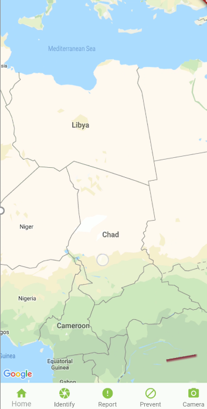
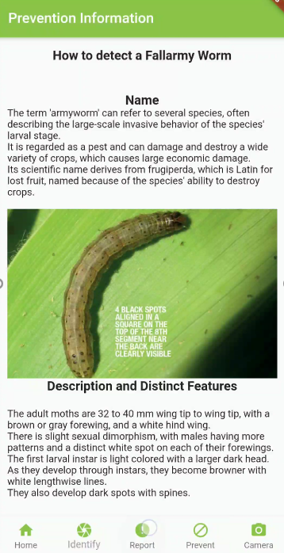
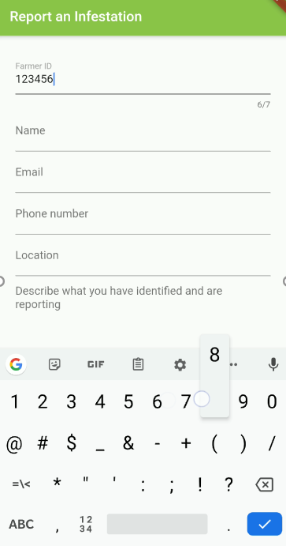

Trocaire Fall Armyworm App
During second year I participated in a software engineering project.
The team for the project was made up of three third years,
who acted as team managers and three second years, who acted as
software developers.
For the project we had to meet with a real company and develop an piece
of software that they would use in the real world.
We decided that we wanted to work with Trocaire as it was nice to work with
a charity Organisation, especially an Irish one.
Trocaire wanted an app that could be used to gain
information on Fall Armyworm attacks, both how to prevent them and how to react to them.
They also wanted a feature that would allow farmers to report infestations so that an NGO's
could go out and help the farmers.

Figure 1: Map Feature.

Figure 2: Information Feature.

Figure 3: Report Feature.
Above are some photos of the final app which contained all the features that Trocaire wanted.
In figure 1 you can see the map feature. This allows users to pin point their exact location on the map and makes it
much easier for help to find them. We used Google's map API to implement this feature.
Figure 2 shows the information feature, where farmers can gain valuable insight on how to prevent infestations and what
to do in the unfortunate event of one.
Figure 3 shows the report feature where farmers can report an infestation and get help from an NGO.
This project thaught me a lot about working in teams and also thinking outside the box.
For example, the target audience for this app were farmers in Africa and because of this we
had to consider what type of phones and internet access they would have and adjusted accordingly.
I really enjoyed working with a large company to bring together a piece of software that
they were satisfied with.